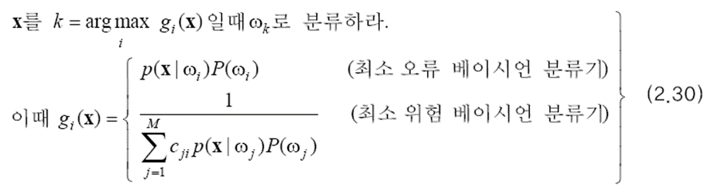
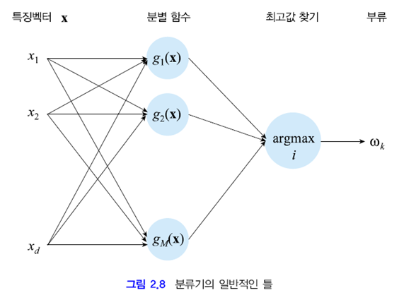
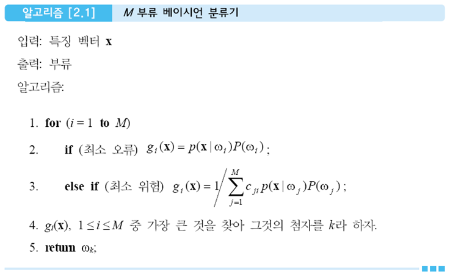

이전 글을 보고 오시지 않은 분들께 추천드립니다.
2023.01.11 - [딥러닝/기초 공부] - [확률/통계] 2. 베이지안 결정 이론 1 + ppt, 연습문제 (패턴인식 - 오일석)
2023.01.13 - [딥러닝/기초 공부] - [확률/통계] 2. 베이지안 결정 이론 2 + ppt, 연습문제 (패턴인식 - 오일석)
[확률/통계] 2. 베이시언 결정 이론 2 + ppt, 연습문제 (패턴인식 - 오일석)이전 편을 보지 않고 오신 분들께 1편을 추천 드립니다. 2023.01.11 - [딥러닝/기초 공부] - [확률/통계] 2. 베이시언 결정 이론 1 + ppt, 연습문제 (패턴인식 - 오일석 저) 2.2 베이시언 분류기 2.1절에서는imkmsh.tistory.com
2.3 분별 함수
분별 함수
M 부류 최소 오류 베이지안 분류기와 M 부류 최소 위험 베이지안 분류기는 서로 다른 수식으로 표현되어 있습니다. 하지만 이 둘을 하나의 틀에 넣어 표현할 수 있습니다.

위의 식은 보다 일반적인 표현 방법으로 gi(x)에 따라 최소 오류 분류기도 되고 최소 위험 분류기도 됩니다. 최소 위험 분류기에서는 argmax로 통일하기 위해 역수를 취했습니다. gi(x)는 x를 서로 다른 부류로 분별하는데 필요한 정보를 제공합니다. 따라서 분별 함수라고 부릅니다.
좋은 점
같은 내용이지만 분별 함수를 도입하여 이렇게 표현하면 좋은 점이 있습니다.
1. 서로 다른 여러 분류기를 일반적인 틀에 넣어 해석할 수 있습니다.

위 그림은 베이지안 분류기를 네트워크 형태로 표현한 것입니다. 이 네트워크는 특징 벡터 x가 들어오면 이것을 M 개의 분별 함수에 입력합니다. 그리고 가장 큰 값을 갖는 것을 찾아내어 해당 부류로 분류해 주는 기능을 합니다. 4장의 신경망과 5장의 SVM도 이 틀에 맞춰 해석할 수 있습니다.
분류 알고리즘을 수도 코드 형태로 아래와 같이 제시할 수 있습니다.

2. 분류 규칙이 확률 값이나 손실 값 그 자체가 아니라 그들 사이의 상대적인 크기를 비교해 의사 결정을 합니다.
어떤 함수f(.)가 단조 증가라면 p(x|ωi) P(ωi)대신 gi(x)=f(p(x|ωi) P(ωi)) 사용하여도 같은 결과를 얻을 수 있습니다. 이때 가장 많이 사용하는 f(.) 함수는 log입니다. log는 곱셈을 덧셈으로 바꾸어 주므로 수식 전개에 유리하고 log 취하면 값의 규모가 커져 수치 오류에 둔감한 이점이 있습니다.